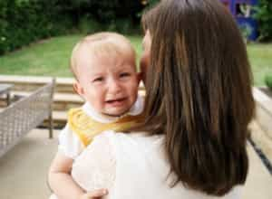

< < < Back
5 Reasons You Should Never Date A Single Mother – Return Of Kings
Popular culture praises single mothers as high-value dating catches for discerning, good men. It is hard to find many greater lies than this one. MILF culture since the late 1990s and early 2000s, epitomized by the American Pie character Finch’s obsession with Steve Stifler’s mom, made bedding and romancing single mothers a seeming must-have on many young men’s sexual bucket lists. Nonetheless, just because you saw it on TV or in a film doesn’t make it truth.
The single mother craze is just the collective self-delusion of has-been women with kids, backed up by a sympathetic cultural narrative. It is designed to assuage the hurt they feel at being upstaged by packs of new, frequently younger or better-looking nubile girls that men really want to claim.

A couple of caveats need to be tacked on to what I am saying. Firstly, the following list includes general, “on average” characteristics of single mothers. Society is replete with thankfully childless über-feminists who hate the idea of ever becoming pregnant. Similarly, there are enough cases of women with kids who would make better partners than girls who are yet to expel a human being from their body.
Also, Western dis-civilisation suffers from a terminal lack of fecundity. As Return Of Kings proprietor Roosh has pointed out, “nationalism without natalism will fail.” The globalist agenda, plus its corollaries of self-disembowelling multiculturalism, pernicious feminism, and transgender lunacy, are all geared towards suppressing positive notions of fertility that accord with true female nature. The problem is not that women have children, but that many women have children in a culture that conditions them to act in repulsive ways, both before and after motherhood.
Meanwhile, single fathers paradoxically have none of the appeal attributed to single mothers. This is irrespective of the fact that men physically age better and do not have any of the deleterious physical effects of bearing children. Worse still, they are never recognized for raising and financially supporting children by themselves, most of all by prospective female partners.
Without further ado, here are the five reasons why single mothers as a group are more out of touch than Rosie O’Donnell at a religious fasting:
1. Their bodies are inferior to women who are not mothers
Yes, you can find many a female fatty who is without children and has no real prospect of having them anytime soon. Likewise, you can find a mother whose ass fills a pair of spandex pants like a gallon of water satisfies a man about to die of thirst in the desert. The norm, however, is that motherhood ruins a woman’s body or, if it doesn’t do so immediately, turns on a steady self-destruct mechanism. With more free time while on maternity leave or doing a poor job at child-rearing as the government and father foot the bill, they can cake on the makeup and adjust the camera filters that allow them to superficially reclaim their pre-motherhood look. Whatever happens, it remains a smokescreen.
In addition, almost every single human being on this planet lets themselves go after having children. They cannot easily coordinate earning an income (if they even do), tending to a growing household, and caring for children with physical maintenance or self-improvement. And if they do coordinate it somewhat, it is at a subpar, barely functioning level. This only adds to the breaking down of a single mother’s looks.
2. They are separated or divorced from their baby daddy for a reason and usually it’s very bad
Women have no socially-enforced responsibility for their relationship behaviors, even when those relationships produce children. For example, repeated studies show that female cheating is approaching or has equaled levels of male infidelity. Yet the mea-culpa-for-straying press conferences you see are of Tiger Woods and not Kristen Stewart. In this permissive environment, which both looks past and invariably rewards prima donna female antics, women with children feel more able still to go off the deep end, sabotage their relationships, and then pretend that they were the offended, even abused party.
It is into this maelstrom of female self-entitlement that the prospective boyfriend of a single mother walks. Not only do you have all the crap involved with the biological father of the child, which the mother usually does nothing to mitigate, you also must deal with the shell of a woman whose malformed relationship strategies remain firmly intact. The world is full of women who have never told a man they were to blame for the end of a previous relationship. Having a child only compounds the problems associated with this distinct lack of self-awareness.
3. They are financial dead-ends
Unless you are pile-driving a doctor, lawyer or someone else similarly well-positioned who has a child or two, your courtship with a single mother is a financial drain on you just waiting to happen. Oh wait, it already is. A woman with a child who really thinks she just wants a boyfriend is bad enough, but single mothers are greatly—if not entirely—motivated by the admitted financial security that a new partner provides. They can lacquer it up all they like with the feeling of finally having that “special someone,” yet the deep-seated function matters a whole lot more than the convenient excuse. She’s probably fooling herself, not just trying to fool you.
To think that female brains have moved much further beyond their mammalian cousins or prehistoric ancestors is pure folly. If your sex drive as a man is often no different to the first homo sapiens, a single mother’s compulsion for male-generated resources has not moved along, either. Except the child is another man’s and not yours. You will be either bailing her out outright or accepting much lower financial and other material contributions from her. And for what?
4. They do not become better people by becoming mothers
The vast majority of people in the world, whether male, female, black, white, or blue, do not change in their lifetimes beyond extremely narrow limits. Age, illness, having a family, or changing jobs may all act as funnels that give the appearance of true change, but these shifts are not what they appear. The same person merely moves into a different phase of existence.
A single mother saying she became a better person by getting knocked up and giving birth is simply backward rationalizing an event just as irreversible as losing one’s virginity. She is putting a positive spin on the end of her more pristine fertility and the advent of stretch marks, sagging mammaries, and a much more constrained social life interspersed with tantrums (hers or the child’s) and the constant whiff of infant fecal matter.
5. They have impulsive and poorly-reasoned behaviors
Why exactly is a single mother a mother? Did she finish high school? Complete any other education? Hold down her last three jobs? Screw half the hood rats in Brooklyn? Inasmuch as an ideal patriarchal society would welcome women having children young, having children young in today’s society, particularly without marriage and a steady financial situation, is very often an indication of sluttiness and a penchant for instant, unending gratification. This bodes terribly for any relationship between her and any man after she splits with the father of her child/children.
Elements of psychological child abuse are also at play because by ignoring her own self-development (and neglecting to cultivate a stable relationship with the father) she is almost certainly passing on significant dysfunction to her son or daughter. Shows like MTV’s Teen Mom equate getting pregnant at 15, 16, or 17 with this, but even much older single mothers are prone to such behavioral clusters.
You will come dead last with single mothers

This super-principle hangs above and holds together the preceding five. You are most likely always an object with single mothers and not a valued option, let alone a priority.
Tread carefully. And why settle for what many would term used goods when there are fresher, childless pastures just down the road?
Read More: Fat Single Mothers Are Child Abusers